Beigesoft™ EIS, start after scratch.
In real life a user usually start to use an accounting software when it already has been doing its business. Assume that Bob started using Beigesoft™ EIS on 21 Jan 2016 with the same (as describing in previous articles) accounting results. He has been using single entry accounting software, he just write records in a spreadsheet. So results are:
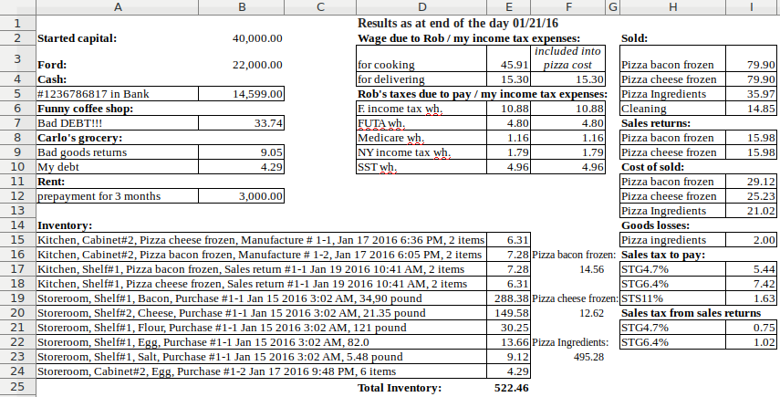
As you can see, only Rob's wage and taxes are liabilities and Bob's income tax expenses at the same time, i.e. they should be recorded as symmetric double entries. All others are recorded as single asymmetric entries. To record beginning Inventory you should use the document Item adding.
Bob started using Beigesoft™ EIS in the same way as described in Software installation, accounting settings, chart of accounts, started capital, except "Started capital". He made these accounting entries "Started capital", "Prepaid Rent", "Debtors/creditors", "Property", "Cash":
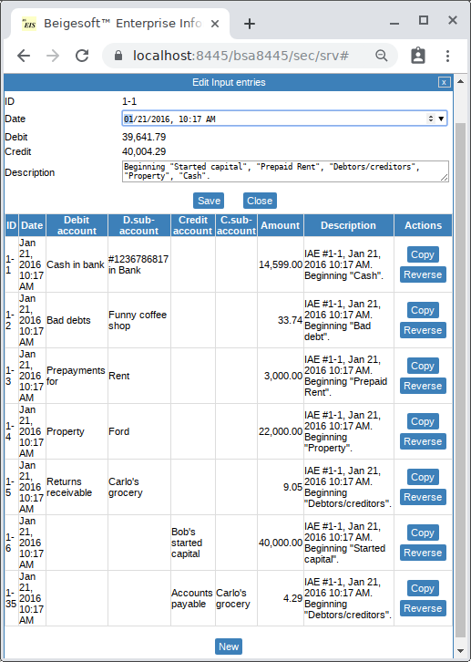
Then Bob made these symmetric accounting entries "Beginning Rob's wage and taxes":
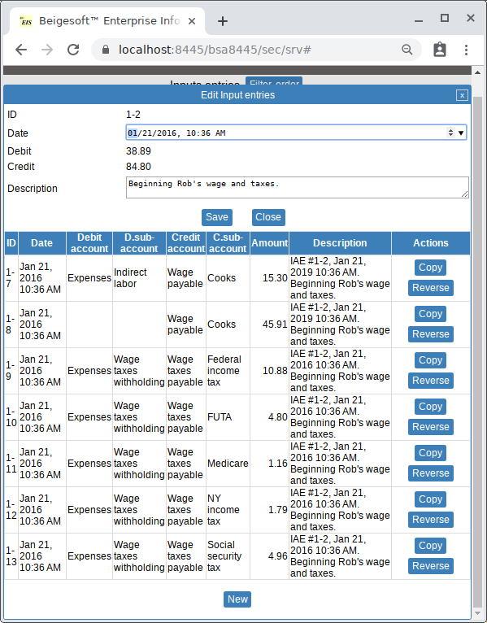
Then Bob made these asymmetric accounting entries "Beginning Sales, Sales returns, COGS, Goods losses":
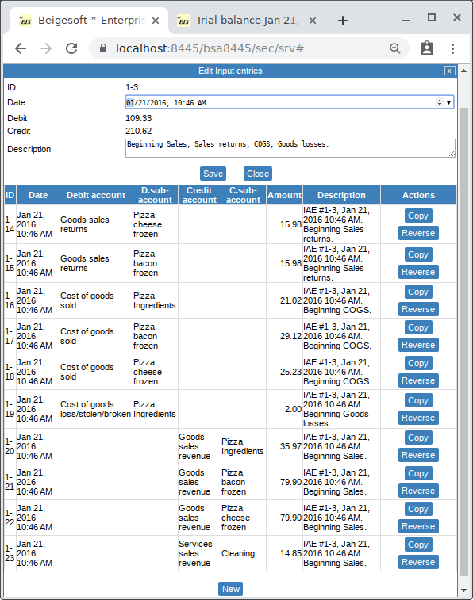
Then Bob made these asymmetric accounting entries "Beginning Sales tax fake":
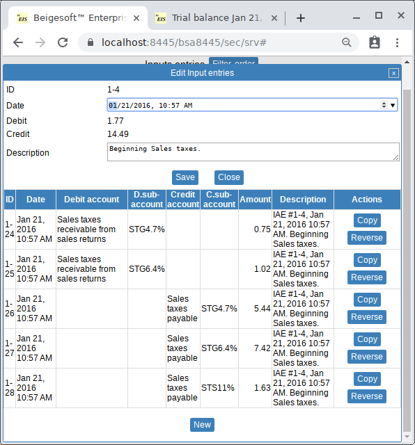
Then Bob made a new "Item adding" document for the source "Purchase #1-1 Jan 15 2016 3:02 AM":
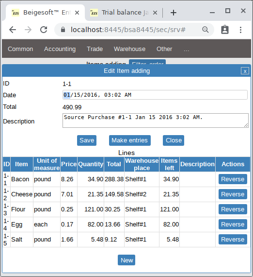
Then Bob made a new "Item adding" document for the source "Manufacture # 1-2, Jan 17 2016 6:05 PM":
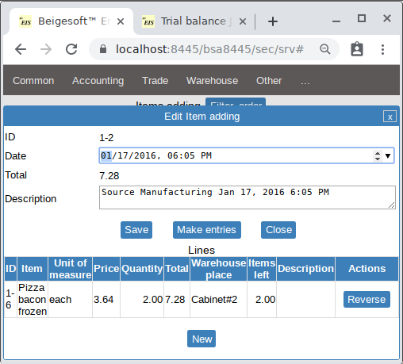
Then Bob made a new "Item adding" document for the source "Manufacture # 1-1, Jan 17 2016 6:36 PM":
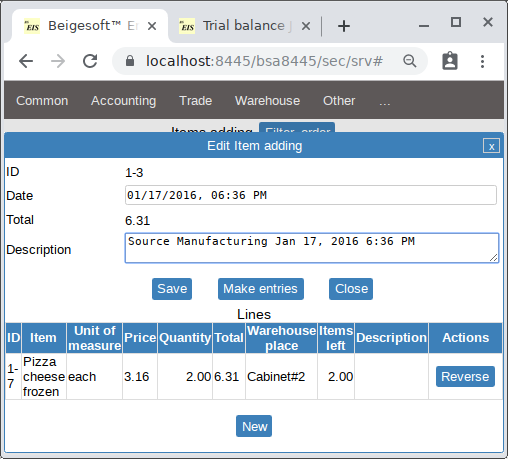
Then Bob made a new "Item adding" document for the source "Purchase #1-2 Jan 17 2016 9:48 PM":
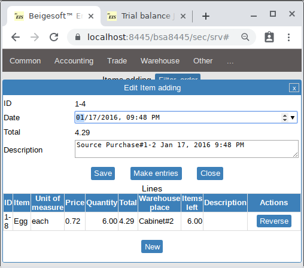
Finally Bob made a new "Item adding" document for the source "Sales return #1-1 Jan 19 2016 10:41 AM":
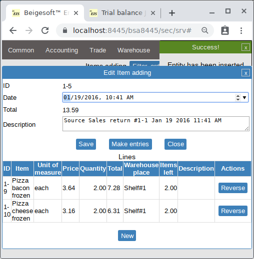
The trial balances in the database "from scratch" and the database "not from scratch" are almost the same:
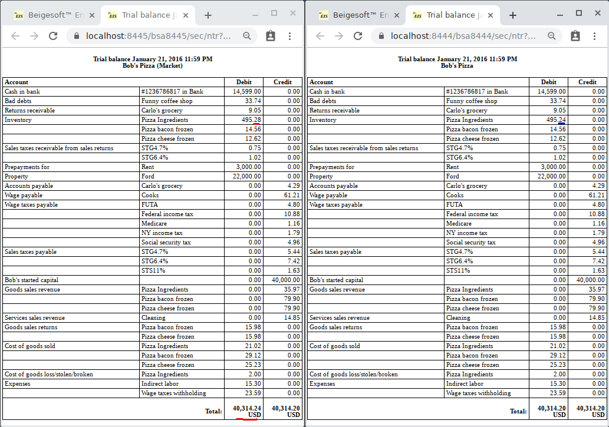
The difference 0.04 USD is because of the purchase return, see Accounting of purchases returns (goods returned to suppliers), there 12 eggs was returned for 2.04 USD (0.17 each), but the COGS entry was made for 2.00 USD.
The warehouse reports for the database "from scratch" and the database "not from scratch" are the same:
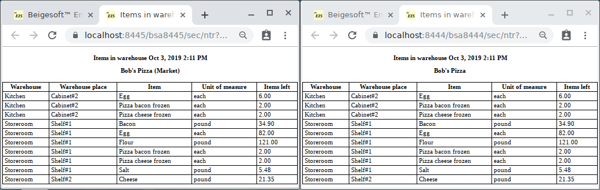
The ledgers reports for the database "from scratch" and the database "not from scratch" are different, e.g. Inventory:
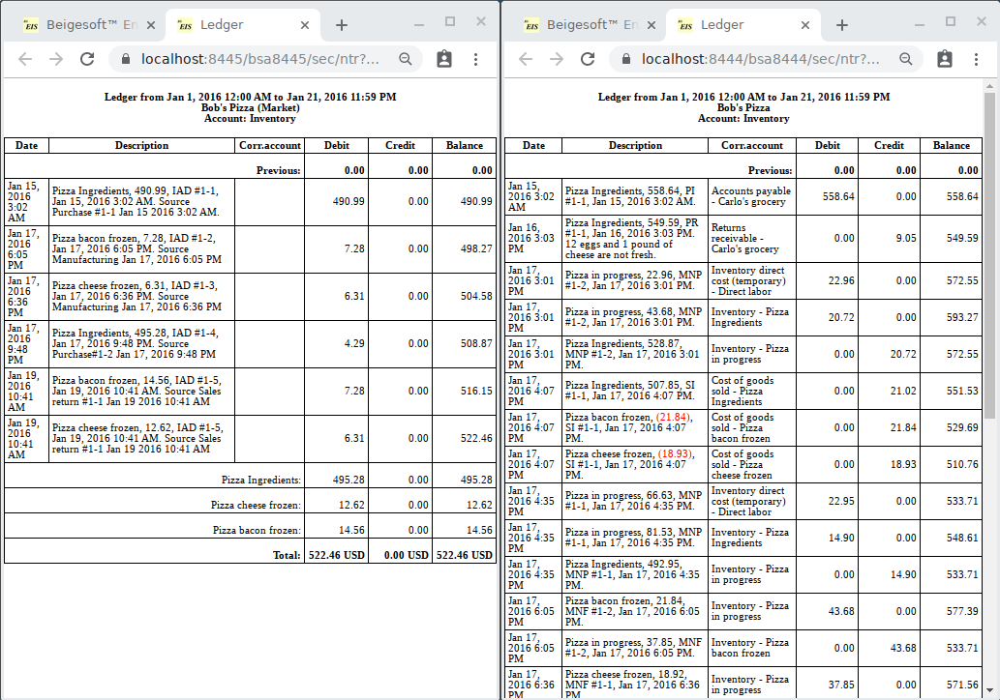
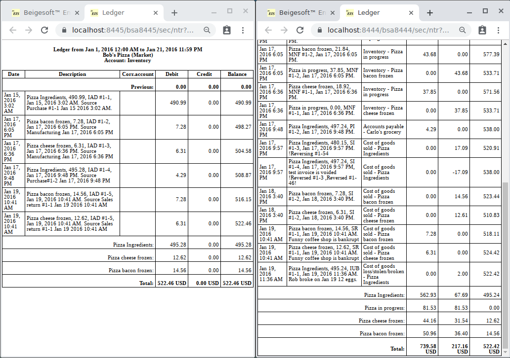